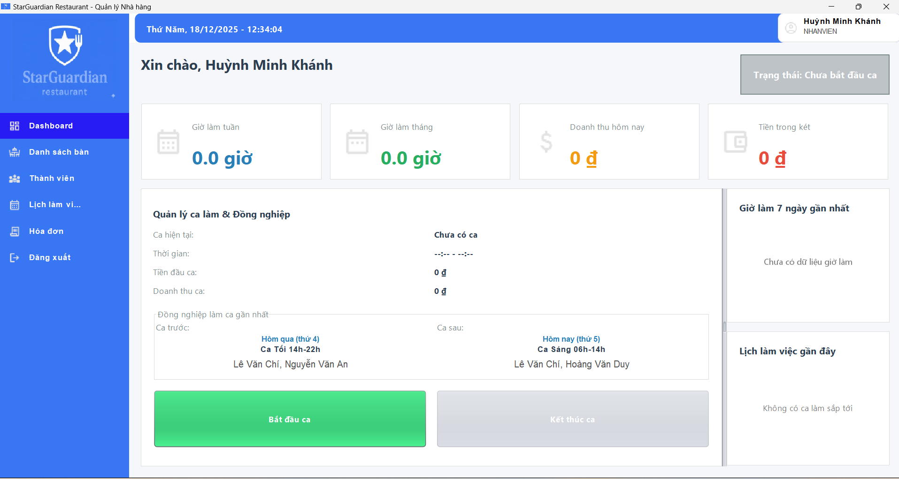

Dashboard Nhân viên
Cung cấp cái nhìn tổng quan về tình hình hiện tại của nhân viên, nhà hàng và là điểm truy cập chính tới các chức năng khác.
Bắt đầu ca làm việc
Đây là thao tác đầu tiên khi bạn đến làm việc:
1. Quan sát khu vực Quản lý ca làm để biết trạng thái hiện tại.
2. Nhấn nút Bắt đầu ca.
3. Nhập số tiền đầu ca (tiền lẻ trong két) để hệ thống ghi nhận.
Hiệu suất làm việc
Hệ thống tự động tính toán và hiển thị:
- Giờ làm tuần & Giờ làm tháng.
- Doanh thu hôm nay (do chính bạn bán được).
- Tiền hiện có trong két.
Biểu đồ & Lịch
- Biểu đồ 7 ngày: Hiển thị số giờ làm của bạn trong 7 ngày gần nhất.
- Lịch làm việc gần đây: Hiển thị danh sách 3 ca làm việc gần nhất của bạn.
Giao ca
Hiển thị thông tin nhân viên trực ca trước và ca sau để thuận tiện cho việc bàn giao công việc.